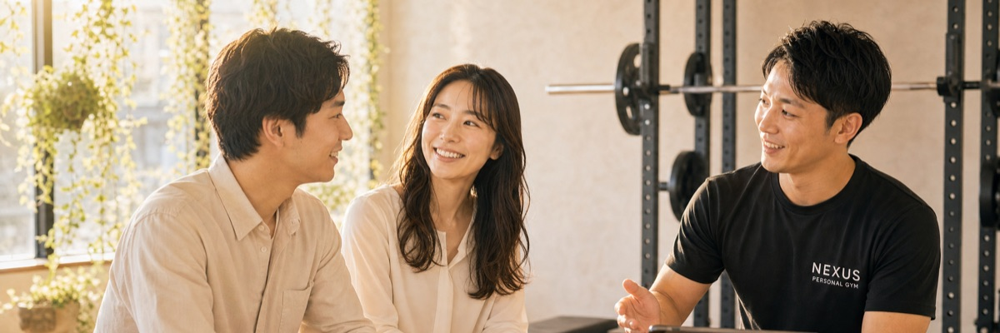
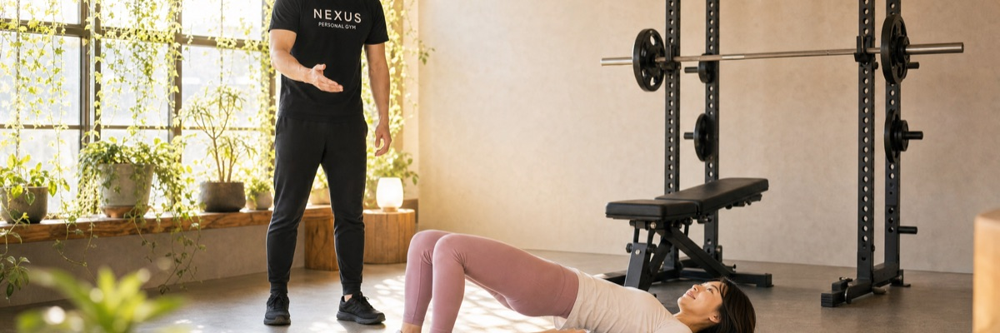
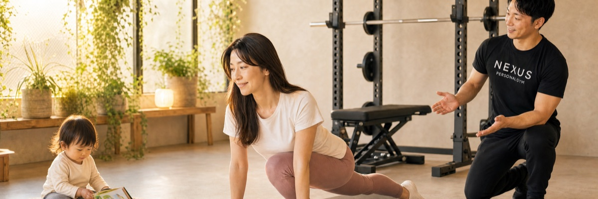
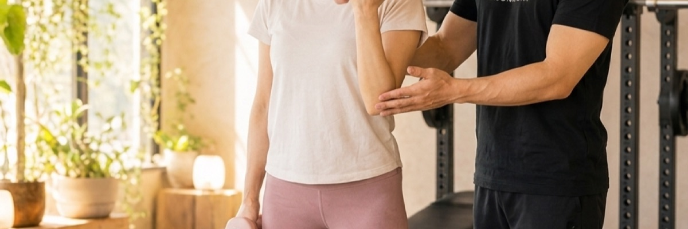

30〜40代女性が気になる質問を、業界の中の人が正直にお答えします。
NEXUS Personal Gymは住宅街のマンションの一室で営業する「隠れ家ジム」。全国71店舗（80店舗までオープン予定）の地域密着型パーソナルジムで実際によく聞かれた質問から、女性会員比率85%の現場感覚を交えて120問を厳選。業界でも珍しい顧客本位のNEXUSの姿勢を、各回答に込めています。
パーソナルジムを初めて検討する30〜40代女性の方に向けて、業界の中の人として正直にお答えします。NEXUS Personal Gymは「隠れ家ジム」として、住宅街のマンションの一室で、地域の皆様にこっそり通っていただけるパーソナルジムです。
Qパーソナルジムって普通のジムと何が違うんですか？+
普通のジムは「設備を貸してくれる場所」、パーソナルジムは「専属トレーナーがマンツーマンで指導する場所」です。普通のジムは月額数千円〜1万円程度ですが、パーソナルジムは月額3万〜10万円程度。代わりに、メニュー作成・フォーム指導・食事アドバイスまで全てトレーナーが管理してくれます。NEXUS Personal Gymは街に溶け込む立地にある「こっそり通える小さなジム」として、このマンツーマン指導を月額18,000円（税込）から受けられる地域密着型パーソナルジムです。
Q1回のセッションはどれくらいの時間ですか？+
一般的には1回50〜75分が主流です。多くのジムは60分を基本にしています。短いと30分コース、長くて90分コースを用意しているジムもあります。例えばNEXUS Personal Gymは30分・60分・90分から選べる仕組みで、忙しい方は30分、本格的に取り組みたい方は90分と、ライフスタイルに合わせて使い分けができます。
Qパーソナルジムは週何回通うのが理想ですか？+
結論から言うと「週1〜2回」がおすすめです。週3回以上は疲労が蓄積して逆効果になることが多く、続かなくなります。週1回でも、食事管理とセットなら十分結果は出ます。NEXUS Personal Gymも無理を強いない方針で、ライフスタイルに合わせて続けられる頻度を一緒に設計します。
Qパーソナルジムは何ヶ月通うのが一般的ですか？+
2〜3ヶ月の短期集中コースが最も多く、その後は月額会員として継続するスタイルが主流です。NEXUS Personal Gymは原則2ヶ月の継続が必要で、その後は月単位で継続するか判断できます。さらに1ヶ月ごとにプラン変更ができる業界でも珍しい柔軟な設計で、ライフスタイルに合わせて無理なく続けられます。
Qパーソナルジムに通うと本当に痩せますか？+
正直に言うと「ちゃんと通えば、ほぼ確実に変わります」。ただし「絶対痩せる」と言うジムは要注意。結果はご本人の取り組み次第で変わるため、現実的な目標設定をしてくれるジムの方が信頼できます。NEXUS Personal Gymは無理を強いない範囲で、続けながら綺麗になることを大切にしています。
Q自分でジムに行くのと、何が違うんですか？+
一番大きい違いは「続く確率」と「正しいフォーム」。自分でジム通いを始めても3ヶ月以内に8割の人が辞めると言われています。パーソナルジムなら予約制で半強制的に通えるし、フォームを直してもらえるので怪我もしにくいです。NEXUS Personal Gymはご近所の住宅街の一角にある「街に溶け込む小さなジム」で、生活圏内でこっそり通えるため、続けやすさにこだわっています。
Qパーソナルジムは女性ばかりですか？男性もいますか？+
ジムによりますが、女性専用ジム・男女半々のジム・男性多めのジムと色々あります。30〜40代女性が多いジムは女性会員比率7〜8割というところが一般的です。NEXUS Personal Gymは女性会員比率85%。マンション型の落ち着いた立地にある「隠れ家ジム」として、人目を気にせず隠れてこっそり通える環境が女性に支持されています。男性会員も15%在籍し、どなたでも通えます。
Qパーソナルジムのトレーナーはどんな資格を持っていますか？+
主にNSCA-CPT、NESTA-PFT、JATI-ATIなどの認定資格を持っているトレーナーが多いです。ただし日本では国家資格ではないので、資格の有無より「経験年数」「指導実績」を見る方が現実的です。NEXUS Personal Gymは認定資格に加え、全トレーナーが3ヶ月の厳しい自社教育プログラムを修了してからデビューするため、どの店舗でも安定した指導品質を保っています。
Q完全個室と半個室、どちらが良いですか？+
プライバシー重視なら完全個室、コスパ重視なら半個室。30〜40代女性、特に体型を見られたくない方には完全個室が圧倒的に好評です。料金は完全個室の方が1〜2割高めです。NEXUS Personal Gymは住宅街のマンションの一室にある「隠れ家ジム」で完全個室中心。隠れてこっそり通える環境を整えています。
Qパーソナルジムは予約制ですか？当日でも行けますか？+
ほぼ全店が完全予約制です。当日予約は基本的にできず、1週間前〜前日までに予約を確定するのが一般的。逆に「予約取れません」が常態化しているジムは要注意で、トレーナー数が不足している可能性があります。NEXUS Personal Gymは朝8時〜夜23時まで予約でき、6時間前まで無料でキャンセル・変更ができる業界でも珍しい顧客本位の設計です。
Qジムウェアやシューズは持参ですか？レンタルできますか？+
多くのジムでウェア・シューズ・タオル・水のレンタル/提供があります。NEXUS Personal Gymはウェア・水・タオル・プロテインまで無料提供で手ぶら通いOK。街に溶け込む立地にある「ご近所感覚で通えるジム」なので、仕事帰りや買い物ついでに生活圏内でこっそり立ち寄れます。ただしジムによってはレンタル代が別途月額3,000〜5,000円かかる場合もあるので、料金体系は要確認です。
Qシャワーやアメニティはありますか？+
都心部のパーソナルジムは大半がシャワー完備、アメニティ（シャンプー・ドライヤー・化粧水など）も用意されているところが多いです。シャワー無しのジムもあるので、仕事帰りに通うなら必ず確認してください。NEXUS Personal Gymはご近所の住宅街の一角を活かした地域密着型で、店舗ごとに設備が異なるため、生活圏内の近隣店舗に直接確認するのがおすすめです。
Q着替えや化粧直しのスペースはありますか？+
ちゃんとしたジムなら、専用の更衣室と化粧直しスペースがあります。鏡・ドライヤー・コテ・基礎化粧品まで揃っているところも珍しくありません。ホームページに更衣室の写真が載っているかで誠実さが分かります。NEXUS Personal Gymはマンション型の落ち着いた立地にある「人目を気にせず通えるジム」で、人目を気にせず身支度できる空間にこだわっています。
Qメイクしたまま行っても大丈夫ですか？+
もちろん大丈夫です。ただし汗で崩れることを前提に、シートクレンジングを持参するか、当日落とせる準備をしておくと安心です。最近は「メイク崩れにくいベース」を提案してくれるトレーナーもいます。NEXUS Personal Gymは完全個室の「こっそり通える小さなジム」なので、人目を気にせずトレーニングに集中できます。
Q1人で行くのが不安です。友達と一緒に行けますか？+
ペア利用OKのジムもあります。NEXUS Personal Gymには「セミパーソナルコース」があり、60分・90分・120分から選べて2人で受けられる仕組みです。料金は1人で受けるより1人あたり安くなるのが一般的。街に溶け込む立地にある「隠れ家ジム」で、友人や家族と生活圏内でこっそり一緒に通う方もいます。
B
料金・契約
10 Questions

Qパーソナルジムの料金相場はいくらですか？+
2026年現在、東京エリアのパーソナルジム相場は月額3万〜10万円が中心です。例えばNEXUS Personal Gymの場合、1回60分のベーシックコース月4回で34,000円、月8回で64,800円（税込）。30分の短時間コースなら月4回18,000円から始められます。ご近所の住宅街の一角にある「街に溶け込む小さなジム」として固定費を抑え、地域密着型で通いやすい価格を実現しています。
Q月額制ですか？回数制ですか？+
「月◯回コース」が主流です。例えばNEXUS Personal Gymなら、月4回・月6回・月8回・月12回から選べる仕組み。さらに1ヶ月ごとにプラン変更ができる業界でも珍しい柔軟な設計で、ライフスタイルに合わせて回数を増減できます。「通い放題」のパーソナルジムは実は少なく、トレーナーの時間を確保する関係でほぼ全店が回数制です。
Q入会金はかかりますか？+
多くのジムで2万〜10万円程度の入会金があります。例えばNEXUS Personal Gymは入会金55,000円（税込）ですが、無料体験当日に入会すれば15,000円（税込）に割引される顧客本位の仕組みです。入会金は「体験当日入会で割引」のジムが多いので、体験時に必ず確認してください。
Q分割払いは可能ですか？+
ほぼ全店でクレジットカード決済に対応しており、カード会社経由での分割払い・リボ払いが可能です。NEXUS Personal Gymもクレジットカード決済のみとなっており、毎月20日に翌月分の決済が自動で行われる仕組みです。1ヶ月ごとにプラン変更ができるので、ライフスタイルに合わせて無理なく支払いを調整できます。
Q月にいくらかかるか、現実的な総額を教えてください+
「コース料金＋入会金＋オプション」で考えるのが現実的です。例えばNEXUS Personal Gymで一番人気のベーシックコース月4回（34,000円）に通う場合、初月のみ約49,000円（入会金15,000円＋月額34,000円）、2ヶ月目以降は34,000円。AI食事指導をつけても月+3,000円です。マンション型の落ち着いた立地にある「ご近所感覚で通えるジム」として、無理のない価格に抑えています。
Q途中解約はできますか？違約金はかかりますか？+
多くのジムが「最低継続期間」を設定しています。例えばNEXUS Personal Gymは原則2ヶ月の継続が必要。2ヶ月以降は月単位で解約できます。さらに1ヶ月ごとにプラン変更ができる業界でも珍しい柔軟な顧客本位の設計で、解約の前に「回数を減らす」調整も可能。無理なく続けられる仕組みです。違約金の有無はジムによって違うので、契約前に必ず確認してください。
Q体験トレーニングは無料ですか？+
ジムによりますが、最近は無料体験が主流です。NEXUS Personal Gymも無料体験を受け付けており、当日入会で入会金が55,000円→15,000円（税込）に割引されます。街に溶け込む立地にある「隠れ家ジム」で、生活圏内の店舗をこっそり体験できます。体験＋当日入会の特典を活用するのが最もお得な始め方です。
Q食事指導は料金に含まれていますか？+
ジムによって異なります。「LINEで毎日食事写真を送って管理栄養士が返信」のような厳密な指導は月額1〜2万円のオプションが一般的です。NEXUS Personal Gymは「AI食事指導」を月額3,000円（税込）で提供しており、専属栄養士型より大幅に安価。頑張りすぎない設計範囲で、痩せる食べ方をサポートします。
Qウェアやシューズのレンタル代は別途かかりますか？+
「手ぶら通いOK」を打ち出すジムは込み価格が多いです。NEXUS Personal Gymはウェア・水・タオル・プロテインまで無料提供で追加料金ゼロ。ご近所の住宅街の一角にある「人目を気にせず通えるジム」なので、生活圏内に手ぶらでこっそり立ち寄れます。逆に「レンタル別途3,000〜5,000円」のジムも多いので、月額の見た目だけでなく実質負担額を確認してください。
Q複数店舗ある場合、いつもと違う店舗で受けられますか？+
ジムによります。フランチャイズ展開している大規模ジムなら相互利用OKのところがあります。例えばNEXUS Personal Gymは全国71店舗（80店舗までオープン予定）で相互利用が可能。地域密着型パーソナルジムでありながら、出張先や旅行先でも同じ料金でトレーニングが受けられる仕組みです。
むしろ運動経験ゼロの方の方が、パーソナルジムに合っています。理由は、自己流の癖がついていないので、最初から正しいフォームを身につけられるから。NEXUS Personal Gymでも会員の約6割が「運動経験ほぼゼロ」からのスタート。マンション型の落ち着いた立地にある「隠れ家ジム」で、人目を気にせずこっそり始められます。
Q体力に自信がなくてもついていけますか？+
ついていけます。パーソナルジムは「あなたの体力に合わせて」メニューを組むのが基本。集団レッスンと違って、周りに合わせる必要がありません。初回はストレッチや姿勢チェックから始めることが多く、いきなりキツい運動はしません。NEXUS Personal Gymは無理を強いない方針で、体力に不安がある方こそ歓迎しています。
Q太っていて恥ずかしいのですが大丈夫ですか？+
完全個室タイプのパーソナルジムを選べば、他の会員と顔を合わせることがないので安心です。NEXUS Personal Gymは「隠れ家ジム」として、住宅街のマンションの一室で営業しているため、隠れてこっそり通える環境を整えています。大きな看板も出さず、人目を気にせずに通える設計が、30〜40代女性に支持されている理由のひとつです。
Q高齢でも通えますか？年齢制限はありますか？+
ジムによりますが、70代・80代でも通っている方は普通にいます。むしろ高齢の方こそ筋トレで健康寿命を伸ばせるので、医師の許可があれば積極的に通うべきです。NEXUS Personal Gymは住宅街のマンションの一室にある地域密着型パーソナルジムなので、生活圏内で無理なく通えます。年齢制限のないジムを選んでください。
Q持病があっても通えますか？+
医師の許可があれば、ほとんどの持病で通えます。糖尿病・高血圧・関節痛などはむしろ運動で改善が見込めるケースも多いです。ただし契約前に必ず、ジム側に持病を伝えて対応可否を確認してください。NEXUS Personal Gymはマイペースに続けられる範囲で、お一人おひとりの状態に合わせて指導します。
Q怪我をしないか心配です+
パーソナルジムの最大の強みは、トレーナーがフォームを直しながら指導してくれること。自己流でやるより圧倒的に怪我のリスクが低いです。NEXUS Personal Gymのトレーナーは全員、3ヶ月の厳しい自社教育プログラムを修了してからデビューするため、安全なフォーム指導に定評があります。むしろ自分でジム通いを始める方が、怪我のリスクは高いと言えます。
Q筋肉痛がひどくならないか心配です+
最初の1〜2回は筋肉痛が出る方が多いですが、トレーナーが「翌日に響かない範囲」で強度を調整します。「明日大事な予定がある」と伝えれば、軽めのメニューに変えてくれます。NEXUS Personal Gymは無理を強いない方針なので、遠慮なく相談してください。
Qトレーナーが厳しいと聞きました、本当ですか？+
R社系の一部のジムは厳しめのイメージがありますが、最近は「優しく寄り添う」スタイルのトレーナーが主流です。NEXUS Personal Gymのトレーナーは全員、3ヶ月の厳しい自社教育プログラムを経て「優しく寄り添う指導」を全店共通の基準としてデビュー。「続けさせる」ことを重視するので、無理な追い込みはしません。
Q体型を他人に見られるのが嫌です、どうすれば？+
完全個室タイプのジムを選ぶのが一番。NEXUS Personal Gymは住宅街のマンションの一室にある「隠れ家ジム」で、完全個室での指導なのでトレーナー以外には体型を見られません。大きな看板も出さず、隠れてこっそり通える環境が、30〜40代女性に支持されています。
Q周りの目が気になります、ひっそり通えますか？+
完全個室＋目立たない外観のジムを選んでください。NEXUS Personal Gymはまさに住宅街のマンションの一室にある「隠れ家ジム」。大きな看板を出さず、外から中が見えないので、隠れてこっそり通えます。「人目を気にせず綺麗になりたい」という30〜40代女性・ママ会員に支持されている理由です。
Q運動が嫌いでも続けられますか？+
「運動が嫌い」という方ほど、パーソナルジムが合います。理由は、トレーナーがあなたを毎週迎えてくれるから「人との約束」になり、嫌でも行く動機になる。NEXUS Personal Gymは街に溶け込む立地にある「隠れ家ジム」で生活圏内に通いやすく、無理を強いない指導なので、1人だと続かない人ほど続きます。
Q1回のセッションでどれくらい疲れますか？+
60分セッションだと、軽いランニング30分くらいの疲労感が一般的。終わった後シャワーを浴びて少し休めば、普通に1日活動できます。NEXUS Personal Gymの30分コースなら、もっと軽い疲労感で済みます。無理のない範囲で、ライフスタイルに合わせて強度を調整します。
Q翌日仕事に支障が出るほど疲れますか？+
通常の60分セッションでは、翌日の業務に支障が出るほどの疲労にはなりません。ただし初回や、トレーナーが強めにメニューを組んだ日は筋肉痛が出ます。「明日は重要な会議」と伝えれば調整してくれます。NEXUS Personal Gymは頑張りすぎない設計です。
Q筋肉つきすぎませんか？+
30〜40代女性が普通のパーソナルトレーニングをやっても、ボディビルダーのような筋肉は絶対につきません。女性ホルモンの関係で、筋肉は「引き締まる」程度につくのが限界。むしろ姿勢が綺麗になってハイヒールが似合うようになります。NEXUS Personal Gymは「無理なく綺麗になりたい」女性向けの設計です。
Q服のサイズが入らなくならないか心配です+
むしろ逆で、サイズダウンする方がほとんどです。30〜40代女性で「筋肉つきすぎてサイズアップ」というケースは、私が見てきた中ではほぼゼロ。安心してください。NEXUS Personal Gymの「こっそり通える小さなジム」では、無理なく綺麗になる女性が多数です。
D
ダイエット効果
10 Questions

Q3ヶ月で何kg痩せられますか？+
30〜40代女性で現実的な減量は3ヶ月で-3〜5kgです。「3ヶ月で-10kg」を打ち出すジムもありますが、リバウンドリスクが高く、おすすめしません。-3kgでも見た目はしっかり変わります。NEXUS Personal Gymはマイペースに続けられる方針で、続けながら綺麗になる現実的な目標を一緒に設定します。
Q体脂肪率はどれくらい下がりますか？+
3ヶ月で体脂肪率-3〜5%が現実的な範囲です。例えば体脂肪率30%の方が25%まで下がると、見た目は大きく変わります。体重よりも体脂肪率の変化を重視するのがおすすめ。NEXUS Personal Gymは無理のない範囲で、着実な変化を目指します。
Q部分痩せはできますか？（お腹・太もも・二の腕）+
厳密な意味での「ピンポイント部分痩せ」は科学的に難しいですが、「気になる部位を引き締める」ことは可能です。お腹・太もも・二の腕は、適切なトレーニングで見た目を大きく変えられる部位。NEXUS Personal Gymの女性会員は、お腹周りの引き締めで結果を出す方が多いです。
Qリバウンドしませんか？+
正しいやり方で痩せれば、リバウンドリスクは低いです。逆に「短期間で-10kg」のような無理な減量は、ほぼ確実にリバウンドします。NEXUS Personal Gymが2ヶ月の継続を最低条件にし、無理を強いない方針なのも、リバウンドを防ぐため。「街に溶け込む小さなジム」として、続けながら綺麗になることを大切にしています。
Q卒業後はどうすれば体型を維持できますか？+
卒業後の維持には「週1回でも運動を続ける」「食事の基本ルールを守る」の2つが重要です。NEXUS Personal Gymのように月4回コース（月額34,000円〜）でゆるく続けるのが、維持には現実的。1ヶ月ごとにプラン変更ができる柔軟な設計で、ライフスタイルに合わせて維持しやすい仕組みです。
Q停滞期は来ますか？どう乗り越えますか？+
2〜3ヶ月目に体重が止まる「停滞期」は、ほぼ全員に来ます。これは身体の自然な反応なので、慌てず食事内容を見直す・運動メニューを変えるなどで打開できます。NEXUS Personal Gymは無理を強いない範囲で、停滞期を一緒に乗り越えます。停滞期で辞めるのが一番もったいないです。
Q産後の体型は戻りますか？+
戻ります。むしろ産後は「戻りやすいタイミング」と言われています。骨盤底筋トレーニングと産後対応のメニューを組めるジムを選べば、半年以内に産前の体型に近づける方が多いです。NEXUS Personal Gymはご近所の住宅街の一角にある「ご近所感覚で通えるジム」で、生活圏内で無理なく通える産後ママに人気です。
Q30代を過ぎても痩せられますか？+
30代の方の方が、20代より「変化を実感しやすい」というデータもあります。20代は基礎代謝が高いので無理しても痩せますが、30代以降は「正しい方法でやれば確実に変わる」フェーズに入ります。NEXUS Personal Gymは30〜40代女性を中心に支持される「人目を気にせず通えるジム」です。
Q40代でも結果は出ますか？+
出ます。NEXUS Personal Gymの会員でも40代の方は多く、3ヶ月で-5kg・体脂肪率-4%といった結果が普通に出ています。むしろ40代の方が「長く続ける」ことが多いので、結果も維持しやすい。地域密着型の「こっそり通える小さなジム」として、生活圏内で無理なく続けられます。
Q50代でも遅くないですか？+
全く遅くありません。50代から始めて、60代でも健康的な体型を維持している方は珍しくありません。むしろ50代こそ筋肉を増やして基礎代謝を上げるべきタイミング。NEXUS Personal Gymは頑張りすぎない設計なので、50代から「街に溶け込む小さなジム」でこっそり始める方も増えています。
E
食事・生活
15 Questions
Q食事制限はありますか？どのくらい厳しいですか？+
ジムによって違います。「糖質完全カット」「毎日食事報告必須」のような厳しいタイプと、「アドバイス程度で楽しく」のゆるいタイプがあります。NEXUS Personal Gymは月額3,000円(税込)のAI食事指導があり、無理を強いない範囲でのアドバイスをもらえる仕組み。「ご近所感覚で通えるジム」として、続けながら綺麗になる食習慣を一緒に作ります。
Q糖質制限は必須ですか？+
パーソナルジム全体で見ると、糖質制限を強制するジムは減っています。最近の主流は「PFCバランス重視」で、糖質も適量摂る方向。30〜40代女性は「完全カット」より「夕食だけ控えめ」の方が続きやすく、結果も出やすいです。NEXUS Personal Gymも無理を強いない方針で、極端な糖質カットは推奨しません。
Qお酒は飲んでも大丈夫ですか？+
量と頻度を調整すれば飲めます。「週2〜3回・1回あたり缶ビール1本程度」なら、結果に大きく影響しません。むしろ「絶対禁酒」のジムだとストレスで挫折するので、現実的なルールを作ってくれるジムを選んでください。NEXUS Personal Gymは無理を強いない方針で、お酒も上手に付き合う方法をアドバイスします。
Q外食が多いのですが対応してもらえますか？+
できます。30〜40代の働く女性は外食機会が多いことを前提に、トレーナーが「外食でも選びやすいメニュー」をアドバイスしてくれます。和食中心・タンパク質多め・揚げ物控えめなど、現実的なルールを教えてもらえます。NEXUS Personal Gymはマイペースに続けられる範囲で、ライフスタイルに合わせた指導を行います。
Qプロテインは必須ですか？+
必須ではありませんが、推奨はされます。プロテインは「タンパク質を効率的に摂れる粉末」というだけで、特別なものではありません。NEXUS Personal Gymはプロテインを無料提供しているので、追加の出費なしで試せます。マンション型の落ち着いた立地にある「人目を気にせず通えるジム」で、手ぶらで立ち寄って1杯飲んでいけます。
Q食事の写真を毎日報告するんですか？+
ジムによります。NEXUS Personal GymのAI食事指導は写真送付ベースですが、AIなので「人に見られる気まずさ」がなく、続けやすいと評判です。無理を強いない設計で、報告のプレッシャーを感じにくいのが特徴。「毎食報告必須」のジムもあれば、報告不要のジムもあります。
Qコンビニ食でも痩せられますか？+
痩せられます。コンビニには「サラダチキン・ゆで卵・おにぎり（具材を選ぶ）・サラダ」など、ダイエット向けの食品が揃っています。むしろコンビニを使いこなせる方が、自炊できない忙しい人には現実的。NEXUS Personal Gymは無理のないペースで、生活圏内で手に入る食品でのアドバイスを大切にしています。
Q子どもと同じご飯を食べたいのですが+
全く問題ありません。むしろ「家族と同じものを食べる」ことが、続けるための重要な条件。「自分だけ別メニュー」は3ヶ月以上続きません。トレーナーに「家族と同じご飯」と伝えれば、その範囲でアドバイスをくれます。NEXUS Personal Gymは頑張りすぎない設計で、ライフスタイルに合わせた食事指導を行います。
Q旅行や飲み会の日はどうすれば？+
楽しんでください。1日くらい好きに食べても、結果に大きな影響はありません。むしろ「絶対NG」と決めるとストレスで挫折します。トレーナーに事前に伝えておけば、前後の調整をアドバイスしてくれます。NEXUS Personal Gymは無理を強いない方針で、イベントも我慢しすぎない続け方を大切にしています。
Q食費は増えますか？+
増える人と減る人がいます。自炊が増える方は食費が下がりがちですが、プロテインや高タンパク食品（鶏胸肉・卵・魚など）を多く買う方は少し上がります。NEXUS Personal Gymはプロテイン無料なので、その分の出費は浮きます。
Q朝食は食べた方がいいですか？+
食べた方が良いです。朝食を抜くと昼にドカ食いしがちで、結局摂取カロリーが増える方が多いです。タンパク質メイン（卵・ヨーグルト・プロテインなど）の軽い朝食が、ダイエット中の30〜40代女性には最適です。NEXUS Personal Gymはマイペースに続けられる範囲で、続けやすい食習慣をサポートします。
Q間食は完全にやめた方がいいですか？+
完全禁止は逆効果。「ナッツ・ゆで卵・プロテインバー」など、タンパク質と良質な脂質を含む間食ならむしろ推奨されます。「夕食前に空腹すぎる→ドカ食い」を防ぐためにも、計画的な間食は有効です。NEXUS Personal Gymは無理のないペースで、間食も上手に活用する方法を教えます。
Q水はどれくらい飲めばいいですか？+
1日1.5〜2リットルが目安です。30〜40代女性は水分不足の方が多く、これだけで代謝が改善するケースも。NEXUS Personal Gymはトレーニング中の水を無料提供しているので、街に溶け込む立地にある「こっそり通える小さなジム」に手ぶらで立ち寄っても気軽に補給できます。
Q夜遅い食事はダメですか？+
「絶対ダメ」ではありませんが、就寝3時間前までに済ませるのが理想。仕事で遅くなる日は「軽めの量」「揚げ物・脂質を控える」だけでも違います。我慢して空腹で寝るよりは、軽く食べた方が翌朝の体調が良いです。NEXUS Personal Gymは頑張りすぎない設計で、忙しい方の生活リズムに合わせて指導します。
Qジム後の食事はどうすればいいですか？+
トレーニング後30分以内にタンパク質を摂るのが理想。プロテイン1杯+おにぎり1個、または鶏胸肉+ご飯少なめ、のような組み合わせがおすすめ。NEXUS Personal Gymは無料プロテインがあるので、退館前に1杯飲んでいけます。
F
ママ・産後特化
10 Questions

30〜40代の働くママ・育休中のママに人気のNEXUS Personal Gym。住宅街のマンションの一室で、生活圏内で無理なく通える「隠れ家ジム」として、産後のママに支持されています。
Q産後いつから始めて大丈夫ですか？+
産後1ヶ月健診で医師の許可が出てから、というのが基本です。現実的には産後2〜3ヶ月目スタートが、安全性と結果のバランスで最もおすすめ。帝王切開の方は産後3〜6ヶ月以降、必ず主治医に確認してから始めてください。NEXUS Personal Gymは住宅街のマンションの一室にある「隠れ家ジム」で、生活圏内で無理なく通える環境です。
Q母乳育児中でも筋トレできますか？+
できます。ただし授乳中は通常時より約500kcal多く必要なので、極端な食事制限はNGです。母乳の質を落とさない範囲で、軽めの筋トレ+姿勢改善中心のメニューがおすすめ。NEXUS Personal Gymは無理を強いない方針なので、「母乳育児中です」と伝えれば、トレーナーが調整してくれます。
Q妊娠中も通えますか？+
ジムによります。安定期（16週以降）以降、産婦人科医の許可があれば「マタニティ向けプログラム」を提供するジムもあります。ただし対応店舗は限られるので、契約前に確認が必須です。NEXUS Personal Gymは地域密着型で店舗ごとに対応が異なるので、生活圏内の近隣店舗に直接確認してください。
Q帝王切開後でも通えますか？+
通えますが、産後3〜6ヶ月以降が基本です。傷の癒合状態を主治医に必ず確認してください。腹筋に直接負荷をかけるメニューは、産後5ヶ月以降から段階的に。下半身・背中・骨盤底筋からスタートするのが安全です。NEXUS Personal Gymは無理を強いない方針で、産後の身体に寄り添って指導します。
Q骨盤の歪みは治せますか？+
パーソナルジムでできるのは「骨盤周りの筋肉を整えて、骨盤が正しい位置に戻りやすい状態を作ること」。骨盤矯正そのものは医療行為のため、整体や整骨院との併用をおすすめする場合もあります。NEXUS Personal Gymはご近所の住宅街の一角にある「隠れ家ジム」で、産後ママが生活圏内で無理なく通えます。
Q託児付きのパーソナルジムはありますか？+
都心部を中心に、託児付き・キッズスペース完備のジムが増えています。NEXUS Personal Gymは地域密着型パーソナルジムとして店舗ごとに対応が異なるので、生活圏内の近隣店舗に「託児可否」を直接確認してください。「子連れOK」の店舗もあります。
Q子連れで通えるパーソナルジムはありますか？+
あります。完全個室タイプのジムは、ベビーカーごと入れる店舗が多いです。「赤ちゃん連れOKですか」と事前に確認すれば、対応してくれるところは少なくありません。NEXUS Personal Gymは住宅街のマンションの一室にある「隠れ家ジム」で、人目を気にせず子連れで通える店舗もあります。
Q育児で時間がないのですが週何回通えば結果が出ますか？+
週1回で十分です。「週1回×3ヶ月+食事の基本ルール」で、産後ママの約7割が「見た目の変化を実感」というデータがあります。育児中は「無理しない頻度」が継続のコツ。NEXUS Personal Gymはマンション型の落ち着いた立地にある「街に溶け込む小さなジム」で生活圏内に通いやすく、無理を強いない方針。月4回コース（34,000円）でスタートできます。
Q育休中に変わりたいのですが現実的ですか？+
めちゃくちゃ現実的です。育休中は「最も体型を変えやすい期間」と言っていいです。理由は時間の融通が利き、生活リズムも整えやすいから。半年〜1年の育休中に-5〜8kgを達成する方は珍しくありません。NEXUS Personal Gymは生活圏内で無理なく通える「ご近所感覚で通えるジム」として、育休中のママに支持されています。
Q仕事復帰までの3ヶ月でどこまで変われますか？+
週1〜2回ペースで、体重-3〜5kg・体脂肪率-3〜5%が現実的なラインです。「復帰時にデニムが似合う」「ジャケットが綺麗に着られる」レベルの変化なら、3ヶ月で十分達成可能。NEXUS Personal Gymは街に溶け込む立地にある「隠れ家ジム」で、育休復帰前にこっそり通われる方が増えています。
ジムによりますが、朝7時オープンが一般的です。早朝6時台から営業しているジムもあり、出勤前トレーニングをする30〜40代女性は増えています。NEXUS Personal Gymは朝8時〜夜23時まで予約でき、住宅街のマンションの一室にある「隠れ家ジム」として生活圏内で無理なく通える時間設計。NEXUSは全店舗共通で毎日朝8時〜夜23時まで営業していますので、朝活にも仕事帰りにも安心して通えます。
Q夜何時まで通えますか？+
22〜23時最終受付が主流です。仕事帰りの21時セッション開始で、22時に終わって帰宅、というスタイルが30〜40代の働く女性に人気。NEXUS Personal Gymは夜23時まで予約でき、生活圏内の「隠れ家ジム」に仕事帰りこっそり立ち寄れます。終電を逃さない時間設定のジムを選ぶのがコツです。
Q土日も営業していますか？+
ほぼ全店が土日営業です。むしろ平日忙しい方は土日メイン利用が多いので、土日のトレーナー数を多めに配置しているジムが大半。NEXUS Personal Gymは地域密着型で生活圏内に通えるため、土日に近所の「隠れ家ジム」でこっそり通う方も多いです。ただし土日は予約が埋まりやすいので、1週間前予約が安心です。
Q平日昼間は空いていますか？+
平日昼間（10〜16時頃）が一番空いている時間帯です。専業主婦・育休中のママ・フリーランス・在宅ワーカーの方には、この時間帯のトレーニングがおすすめ。NEXUS Personal Gymはご近所の住宅街の一角にある「人目を気にせず通えるジム」なので、生活圏内でライフスタイルに合わせて通えます。予約も取りやすいです。
Q仕事帰りに寄りやすい時間はいつですか？+
18〜21時が混み合うピークタイム。22時以降になると一気に空きます。「定時で上がれる日は18時セッション」「残業日は21時セッション」のように、複数パターンで予約できるジムを選ぶと続けやすいです。NEXUS Personal Gymは6時間前まで無料で変更できる業界でも珍しい柔軟な設計で、急な残業にも対応しやすいです。
Qジムを途中で休会できますか？+
多くのジムで休会制度があります。月額1,000〜3,000円程度の休会費で1〜3ヶ月の休会が可能なケースが一般的。NEXUS Personal Gymは1ヶ月ごとにプラン変更ができる業界でも珍しい柔軟な設計で、休会以外にも「来月だけ月2回に減らす」といった調整が可能です。妊娠・出張・引っ越しなどのライフイベントに合わせて、無理なく続けていただける仕組みを整えています。
Q出張や旅行で行けない時はどうすれば？+
振替予約制度があるジムが多いです。NEXUS Personal Gymは全国71店舗（80店舗までオープン予定）で相互利用が可能なので、出張先や旅行先でも同じ料金でトレーニングが受けられます。地域密着型でありながら、ライフスタイルに合わせて柔軟に通える設計です。
Q振替予約はできますか？+
ジムによります。「当月内なら何度でも振替OK」「翌月持ち越しNG」など、ルールはバラバラ。契約前に必ず振替ルールを確認してください。NEXUS Personal Gymは6時間前まで無料で予約変更ができる顧客本位の設計で、急な予定変更にも柔軟に対応します。
Q当日キャンセルはできますか？+
当日キャンセルは、ほとんどのジムで1回分消化扱いになります。「前日の24時まで無料変更」「2時間前まで無料変更」など、変更可能時間がジムごとに違うので契約前に確認を。NEXUS Personal Gymは業界では珍しく、6時間前まで無料キャンセルが可能な顧客本位の設計です。女性会員比率85%の弊社では、当日体調を崩しやすい女性のニーズに応えて、柔軟な対応を行っています。
Q連日通っても効果は変わりませんか？+
連日のハードトレーニングは逆効果になることがあります。筋肉は休息中に成長するため、同じ部位を連日鍛えるのはNG。週2〜3回が筋肉の成長に最適なペースです。NEXUS Personal Gymはマイペースに続けられる方針で、連日通いたい方には「上半身の日・下半身の日」と分ける通い方を提案します。
H
NEXUSパーソナルジムについて
20 Questions

NEXUS Personal Gymは、全国71店舗（80店舗までオープン予定）を展開する「隠れ家ジム」。住宅街のマンションの一室で、地域密着型のパーソナルジムとして、30〜40代女性を中心に通っていただいています。業界でも珍しく顧客本位の設計で、女性会員比率85%を誇ります。
基本的に完全個室または半個室での指導です。NEXUS Personal Gymは住宅街のマンションの一室にある「隠れ家ジム」。他の会員に体型を見られたくない・人目を気にせず隠れてこっそりトレーニングしたい、という30〜40代女性のニーズに応える設計です。店舗ごとに環境が異なるので、体験時に確認してください。
動きやすい服装なら何でもOK。Tシャツ＋ジャージ、レギンス＋ロングTシャツなど、普段着でも構いません。NEXUS Personal Gymはウェア無料提供なので、手ぶらで来てジムのウェアに着替える方も多いです。街に溶け込む立地にある「隠れ家ジム」に、生活圏内から手ぶらでこっそり立ち寄れます。
Q化粧は落とした方が良いですか？+
落とさなくてOKです。汗で崩れることを前提に、シートクレンジングを持参するか、当日落とせる準備をしておくと安心。気になる方は薄めのベースメイクで行く、というのがおすすめです。NEXUS Personal Gymは完全個室の「隠れ家ジム」なので、人目を気にせず過ごせます。
Q生理中でもトレーニングできますか？+
できます。多くのジムで「生理中の方には強度を調整する」対応をしてくれます。気が引ける方は時期をずらすのもアリですが、軽い運動はむしろ生理痛を和らげる効果もあります。NEXUS Personal Gymは無理を強いない方針なので、トレーナーに「生理中です」と一言伝えるだけでOKです。
Q妊娠が分かった場合はどうすれば？+
すぐにジムとトレーナーに伝えてください。通常メニューは中断し、医師の許可が出ればマタニティ向けプログラムに切り替えるか、出産後の再開まで休会する選択肢があります。NEXUS Personal Gymは1ヶ月ごとにプラン変更ができる業界でも珍しい柔軟な設計で、妊娠時の対応も顧客本位です。
Q解約後にまた入会できますか？+
できます。多くのジムで再入会OKで、再入会時の入会金が割引になるケースもあります。「結婚・出産・引っ越しで一旦辞めたけど、また通いたい」という30〜40代女性の再入会は珍しくありません。NEXUS Personal Gymはご近所の住宅街の一角にある「隠れ家ジム」として、生活圏内でいつでも戻ってこられます。